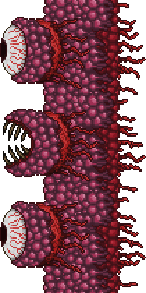
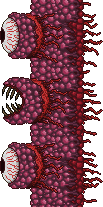

Gallery
The Wall of Flesh
The Hungry (Minion)
Leech (Minion)

Voodoo Demon
Isn't part of the boss fight. This enemy drops the summoning item.

Guide Voodoo Doll
The Wall of Flesh is the final Pre-Hardmode boss.
It is recommended that the player defeat all of the previous bosses on this list, except for the boss associated with the evil biome not in their world, before facing the Wall of Flesh.
This boss can only be fought in the Underworld, the deepest location in Terraria.
This boss is a giant wall with 2 big eyes and a big mouth.
It has a wide variety of attacks, and has 2 types of minions that it can summon during the fight.
The boss will slowly move towards whatever the furthest side of the map was when it spawned.
It is recommended to only spawn this boss at one of the edges of the world, so as to give the player the maximum amount of space to fight in.
Defeating this boss will shift the world into Hardmode. Only face this boss when ready to not only defeat it, but also to deal with the consequences of its demise.
This boss doesn't spawn on it's own. Player intervention is needed, whether intentional or accidental.
Dropping a 'Guide Voodoo Doll' into lava in the Underworld will spawn the boss.
This item is dropped from 'Voodoo Demons' found in the Underworld.
It is possible for a doll to be accidentally dropped into lava if one were to carelessly kill demons while over lava.
This boss has too many varied attacks for me to give a single accurate attack stat.
| Difficulty: | Classic | Expert | Master |
|---|---|---|---|
| Health: | 8000 | 11200 | 14280 |
| Defense: | 0 (Eye) to 12 (Mouth) | 6 (Eye) to 18 (Mouth) | 6 (Eye) to 18 (Mouth) |
The Wall of Flesh
The Hungry (Minion)
Leech (Minion)
Voodoo Demon
Isn't part of the boss fight. This enemy drops the summoning item.
Guide Voodoo Doll